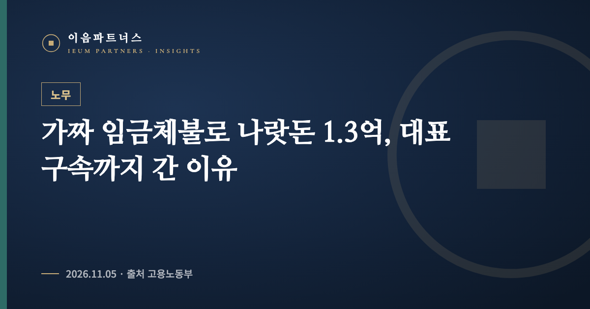

가짜 임금체불로 나랏돈 1.3억, 대표 구속까지 간 이유

직원 임금이 밀렸을 때 나라가 회사 대신 먼저 주는 제도가 있습니다. 2026년 11월, 이 제도를 거짓 체불 신고로 악용한 인테리어 공사업체 대표가 구속됐습니다. 이 글에서는 사건의 내용과 대지급금 제도, 부정수급을 하면 어떤 제재를 받는지 정리합니다.
자금이 빠듯할 때 대지급금을 회사 대신 나라가 주는 돈 정도로 가볍게 여기기 쉽습니다. 하지만 사실과 다른 체불 신고에 관여하면 받은 돈을 돌려주는 것은 물론 형사처벌까지 받을 수 있습니다. 임금 지급이 걱정되는 상황이라면 카카오톡 채널 이음파트너스에서 먼저 상의해 보셔도 됩니다.
무슨 일이 있었나
중부지방고용노동청 인천북부지청은 실내 인테리어 공사업체 대표를 임금채권보장법 위반 혐의로 구속했습니다. 이 대표는 2022년부터 2024년까지 하청업체 대표 3명, 내부 직원 1명과 짜고 총 28명에 대해 약 1억 3천만 원 규모의 간이대지급금 부정수급을 주도한 혐의를 받습니다(고용노동부 보도자료).
| 구분 | 내용 |
|---|---|
| 실제로 받은 돈 | 21명 명의로 대지급금 6,957만 원 |
| 더 받으려다 적발 | 9명 명의로 5,839만 원 |
| 쓰인 곳 | 하청업체에 주지 못한 공사대금 정산, 일부는 개인 도박 자금 |
| 수법 | 하청 근로자를 자기 회사 직원처럼 꾸민 허위 노무대장, 노동청 출석 후 거짓 진술, 통신 기지국 조회 내역 위조 |
사건은 공범 한 명의 제보로 드러났고, 공범들의 자백과 계좌 추적, 메신저 대화 포렌식(디지털 기록 복원·분석)으로 전모가 밝혀졌습니다. 대표는 2024년 7월 입건된 뒤 출석 요구에 응하지 않아 지명수배됐다가 11월 3일 체포됐고, 법원은 11월 5일 증거 인멸과 도주 우려를 인정해 구속영장을 발부했습니다.
간이대지급금은 어떤 제도인가
간이대지급금은 회사의 도산 여부와 관계없이 임금을 받지 못한 근로자에게 나라가 회사 대신 먼저 지급하는 돈입니다. 퇴직자는 최종 3개월분 임금과 최종 3년간 퇴직급여 중 체불액을 합쳐 최대 1,000만 원(임금 700만 원, 퇴직급여 700만 원)까지, 재직자는 최대 700만 원까지 받을 수 있습니다(고용노동부).
이 돈은 사업주들이 내는 부담금으로 운영되는 임금채권보장기금에서 나갑니다. 인천북부지청장은 “대지급금 제도는 임금 체불로 어려움을 겪고 있는 근로자들의 생계 안정을 지원하는 제도”라며, 부정수급이 성실하게 부담금을 내는 다른 사업주의 부담까지 늘린다고 강조했습니다(고용노동부 보도자료).
부정수급하면 어떻게 되나
노동청은 악의적·고의적 부정수급은 구속수사를 원칙으로 하겠다고 밝혔습니다. 부정수급액 전액 환수는 물론 최대 5배의 추가 징수금, 3년 이하 징역 또는 3천만 원 이하 벌금 등 민사·형사 조치를 검토한다는 방침입니다(고용노동부 보도자료).
대표님이 지금 확인할 것
- 노무대장과 근로계약서가 실제 일한 사람·기간과 맞는지, 하청 인력을 우리 직원처럼 적어 두지 않았는지
- 체불 확인이나 진정 사건에서 회사가 내는 명단과 금액이 사실 그대로인지
- 하청 공사대금 문제를 대지급금으로 풀자는 제안은 받아들이지 않기
- 임금이 밀릴 것 같다면 지급 계획을 직원과 서면으로 정리하고 전문가와 먼저 상의하기
참고한 자료
- (인천북부지청) 간이대지급금 약 1억 3천만원을 부정수급 및 추가 편취 시도한 사업주 구속 — 고용노동부 (2026.11.05)
- 근로계약서 일하기전 반드시! — 고용노동부 (2026)
체불 문제는 숨기거나 꾸밀수록 회사와 대표의 부담이 커집니다. 임금 지급이 어려운 상황이라면 혼자 판단하기 전에 카카오톡 채널 이음파트너스로 먼저 상의해 주세요.
※ 이 글은 일반적인 정보 제공을 위한 것으로, 개별 사안은 세무사·노무사 등 전문가와 함께 확인하시기 바랍니다.